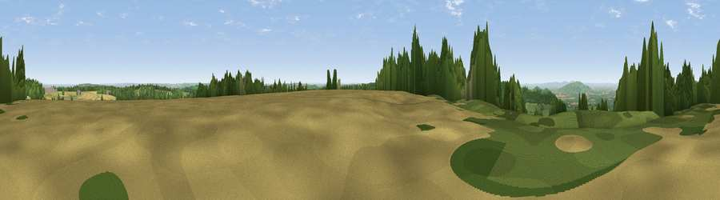

Seven Wells Hill
#7013 in England · top 13% of its area beats it · near SnowshillThe view, rendered

A 360° render of this exact spot computed from the terrain model, tree cover and land cover — summer colours, afternoon light, calibrated against photographs of famous viewpoints. Real trees, hedges and buildings will differ in detail.
The panorama
Grey silhouette: terrain skyline in each direction (720 bearings, Earth curvature and refraction included). Dashed green: skyline with trees (+15 m) and buildings (+8 m) as obstacles. Blue strip: how far the ground is visible on each bearing.
Where the view opens
Wedge length = distance to the farthest visible ground on that bearing (vegetation-aware). Rings at 10, 25 and 50 km.
What fills the view
37% grassland · 34% woodland · 26% cropland · 2% built-up
Angular shares of the visible panorama (visual magnitude), not map area. Landscape diversity 0.52 (0–1 Shannon).
Key numbers
More beautiful places nearby
The staircase of upgrades: each row has a higher view potential than everything closer. Driving times are estimates from straight-line distance, calibrated against real road routing — check an actual route before setting out.
| Place | Direction | Drive | Score |
|---|---|---|---|
| Broadway Hill | N · 1 km | ~4 min | 77.7 |
| Viewpoint near Alstone | WSW · 14 km | ~26 min | 79.8 |
| Viewpoint near Elmley Castle | WNW · 15 km | ~26 min | 80.5 |
| Nottingham Hill | WSW · 15 km | ~27 min | 80.9 |
| Bredon Hill | WNW · 17 km | ~29 min | 83.0 |
| Black Hill | W · 35 km | ~53 min | 83.1 |
| Pinnacle Hill | WNW · 35 km | ~54 min | 85.7 |
| Millennium Hill | W · 36 km | ~54 min | 86.9 |
52.01185, -1.83422 · source: dobih hill · position refined by local search. Computed location — check access rights before visiting.